土地稅法：我的法條筆記¶
34 則條文重點、48 則主題整理、其中 1 條跟現行條文不同（標「條文已修正」）。
條文重點¶
第3條¶
現行條文
地價稅或田賦之納稅義務人如左：
一、土地所有權人。
二、設有典權土地，為典權人。
三、承領土地，為承領人。
四、承墾土地，為耕作權人。
前項第一款土地所有權屬於公有或公同共有者，以管理機關或管理人為納稅義務人；其為分別共有者，地價稅以共有人各按其應有部分為納稅義務人；田賦以共有人所推舉之代表人為納稅義務人，未推舉代表人者，以共有人各按其應有部分為納稅義務人。
第3條之1¶
現行條文
土地為信託財產者，於信託關係存續中，以受託人為地價稅或田賦之納稅義務人。
前項土地應與委託人在同一直轄市或縣（市）轄區內所有之土地合併計算地價總額，依第十六條規定稅率課徵地價稅，分別就各該土地地價占地價總額之比例，計算其應納之地價稅。但信託利益之受益人為非委託人且符合左列各款規定者，前項土地應與受益人在同一直轄市或縣（市）轄區內所有之土地合併計算地價總額：
一、受益人已確定並享有全部信託利益者。
二、委託人未保留變更受益人之權利者。
第5條¶
現行條文
土地增值稅之納稅義務人如左：
一、土地為有償移轉者，為原所有權人。
二、土地為無償移轉者，為取得所有權之人。
三、土地設定典權者，為出典人。
前項所稱有償移轉，指買賣、交換、政府照價收買或徵收等方式之移轉；所稱無償移轉，指遺贈及贈與等方式之移轉。
第5條之2¶
現行條文
受託人就受託土地，於信託關係存續中，有償移轉所有權、設定典權或依信託法第三十五條第一項規定轉為其自有土地時，以受託人為納稅義務人，課徵土地增值稅。
以土地為信託財產，受託人依信託本旨移轉信託土地與委託人以外之歸屬權利人時，以該歸屬權利人為納稅義務人，課徵土地增值稅。
第9條¶
現行條文
本法所稱自用住宅用地，指土地所有權人或其配偶、直系親屬於該地辦竣戶籍登記，且無出租或供營業用之住宅用地。
第12條¶
現行條文
本法所稱公告現值，指直轄市及縣（市）政府依平均地權條例公告之土地現值。
第16條¶
現行條文
地價稅基本稅率為千分之十。土地所有權人之地價總額未超過土地所在地直轄市或縣（市）累進起點地價者，其地價稅按基本稅率徵收；超過累進起點地價者，依左列規定累進課徵：
一、超過累進起點地價未達五倍者，就其超過部分課徵千分之十五。
二、超過累進起點地價五倍至十倍者，就其超過部分課徵千分之二十五。
三、超過累進起點地價十倍至十五倍者，就其超過部分課徵千分之三十五。
四、超過累進起點地價十五倍至二十倍者，就其超過部分課徵千分之四十五。
五、超過累進起點地價二十倍以上者，就其超過部分課徵千分之五十五。
前項所稱累進起點地價，以各該直轄市或縣（市）土地七公畝之平均地價為準。但不包括工業用地、礦業用地、農業用地及免稅土地在內。
第17條¶
現行條文
合於左列規定之自用住宅用地，其地價稅按千分之二計徵：
一、都市土地面積未超過三公畝部分。
二、非都市土地面積未超過七公畝部分。
國民住宅及企業或公營事業興建之勞工宿舍，自動工興建或取得土地所有權之日起，其用地之地價稅，適用前項稅率計徵。
土地所有權人與其配偶及未成年之受扶養親屬，適用第一項自用住宅用地稅率繳納地價稅者，以一處為限。
第18條¶
現行條文
供左列事業直接使用之土地，按千分之十計徵地價稅。但未按目的事業主管機關核定規劃使用者，不適用之：
一、工業用地、礦業用地。
二、私立公園、動物園、體育場所用地。
三、寺廟、教堂用地、政府指定之名勝古蹟用地。
四、經主管機關核准設置之加油站及依都市計畫法規定設置之供公眾使用之停車場用地。
五、其他經行政院核定之土地。
在依法劃定之工業區或工業用地公告前，已在非工業區或工業用地設立之工廠，經政府核准有案者，其直接供工廠使用之土地，準用前項規定。
第一項各款土地之地價稅，符合第六條減免規定者，依該條減免之。
第19條¶
現行條文
都市計畫公共設施保留地，在保留期間仍為建築使用者，除自用住宅用地依第十七條之規定外，統按千分之六計徵地價稅；其未作任何使用並與使用中之土地隔離者，免徵地價稅。
第20條¶
現行條文
公有土地按基本稅率徵收地價稅。但公有土地供公共使用者，免徵地價稅。
第21條¶
現行條文
凡經直轄市或縣（市）政府核定應徵空地稅之土地，按該宗土地應納地價稅基本稅額加徵二至五倍之空地稅。
第22條¶
現行條文
非都市土地依法編定之農業用地或未規定地價者，徵收田賦。但都市土地合於左列規定者亦同：
一、依都市計畫編為農業區及保護區，限作農業用地使用者。
二、公共設施尚未完竣前，仍作農業用地使用者。
三、依法限制建築，仍作農業用地使用者。
四、依法不能建築，仍作農業用地使用者。
五、依都市計畫編為公共設施保留地，仍作農業用地使用者。
前項第二款及第三款，以自耕農地及依耕地三七五減租條例出租之耕地為限。
農民團體與合作農場所有直接供農業使用之倉庫、冷凍（藏）庫、農機中心、蠶種製造（繁殖）場、集貨場、檢驗場、水稻育苗用地、儲水池、農用溫室、農產品批發市場等用地，仍徵收田賦。
公有土地供公共使用及都市計畫公共設施保留地在保留期間未作任何使用並與使用中之土地隔離者，免徵田賦。
第28條¶
現行條文
已規定地價之土地，於土地所有權移轉時，應按其土地漲價總數額徵收土地增值稅。但因繼承而移轉之土地，各級政府出售或依法贈與之公有土地，及受贈之私有土地，免徵土地增值稅。
第28條之2¶
現行條文
配偶相互贈與之土地，得申請不課徵土地增值稅。但於再移轉依法應課徵土地增值稅時，以該土地第一次不課徵土地增值稅前之原規定地價或最近一次課徵土地增值稅時核定之申報移轉現值為原地價，計算漲價總數額，課徵土地增值稅。
前項受贈土地，於再移轉計課土地增值稅時，贈與人或受贈人於其具有土地所有權之期間內，有支付第三十一條第一項第二款改良土地之改良費用或同條第三項增繳之地價稅者，準用該條之減除或抵繳規定；其為經重劃之土地，準用第三十九條之一第一項之減徵規定。該項再移轉土地，於申請適用第三十四條規定稅率課徵土地增值稅時，其出售前一年內未曾供營業使用或出租之期間，應合併計算。
第28條之3¶
現行條文
土地為信託財產者，於左列各款信託關係人間移轉所有權，不課徵土地增值稅：
一、因信託行為成立，委託人與受託人間。
二、信託關係存續中受託人變更時，原受託人與新受託人間。
三、信託契約明定信託財產之受益人為委託人者，信託關係消滅時，受託人與受益人間。
四、因遺囑成立之信託，於信託關係消滅時，受託人與受益人間。
五、因信託行為不成立、無效、解除或撤銷，委託人與受託人間。
第29條¶
現行條文
已規定地價之土地，設定典權時，出典人應依本法規定預繳土地增值稅。但出典人回贖時，原繳之土地增值稅，應無息退還。
第30條¶
現行條文
土地所有權移轉或設定典權，其申報移轉現值之審核標準，依下列規定：
一、申報人於訂定契約之日起三十日內申報者，以訂約日當期之公告土地現值為準。
二、申報人逾訂定契約之日起三十日始申報者，以受理申報機關收件日當期之公告土地現值為準。
三、遺贈之土地，以遺贈人死亡日當期之公告土地現值為準。
四、依法院判決移轉登記者，以申報人向法院起訴日當期之公告土地現值為準。
五、經法院或法務部行政執行署所屬行政執行分署（以下簡稱行政執行分署）拍賣之土地，以拍定日當期之公告土地現值為準。但拍定價額低於公告土地現值者，以拍定價額為準；拍定價額如已先將設定抵押金額及其他債務予以扣除者，應以併同計算之金額為準。
六、經政府核定照價收買或協議購買之土地，以政府收買日或購買日當期之公告土地現值為準。但政府給付之地價低於收買日或購買日當期之公告土地現值者，以政府給付之地價為準。
前項第一款至第四款申報人申報之移轉現值，經審核低於公告土地現值者，得由主管機關照其自行申報之移轉現值收買或照公告土地現值徵收土地增值稅。前項第一款至第三款之申報移轉現值，經審核超過公告土地現值者，應以其自行申報之移轉現值為準，徵收土地增值稅。
於中華民國八十六年一月十七日起至八十六年十月三十日期間經法院判決移轉、法院拍賣、政府核定照價收買或協議購買之案件，於期間屆至尚未核課或尚未核課確定者，其申報移轉現值之審核標準適用第一項第四款至第六款及前項規定。
第30條¶
現行條文
土地所有權移轉或設定典權，其申報移轉現值之審核標準，依下列規定：
一、申報人於訂定契約之日起三十日內申報者，以訂約日當期之公告土地現值為準。
二、申報人逾訂定契約之日起三十日始申報者，以受理申報機關收件日當期之公告土地現值為準。
三、遺贈之土地，以遺贈人死亡日當期之公告土地現值為準。
四、依法院判決移轉登記者，以申報人向法院起訴日當期之公告土地現值為準。
五、經法院或法務部行政執行署所屬行政執行分署（以下簡稱行政執行分署）拍賣之土地，以拍定日當期之公告土地現值為準。但拍定價額低於公告土地現值者，以拍定價額為準；拍定價額如已先將設定抵押金額及其他債務予以扣除者，應以併同計算之金額為準。
六、經政府核定照價收買或協議購買之土地，以政府收買日或購買日當期之公告土地現值為準。但政府給付之地價低於收買日或購買日當期之公告土地現值者，以政府給付之地價為準。
前項第一款至第四款申報人申報之移轉現值，經審核低於公告土地現值者，得由主管機關照其自行申報之移轉現值收買或照公告土地現值徵收土地增值稅。前項第一款至第三款之申報移轉現值，經審核超過公告土地現值者，應以其自行申報之移轉現值為準，徵收土地增值稅。
於中華民國八十六年一月十七日起至八十六年十月三十日期間經法院判決移轉、法院拍賣、政府核定照價收買或協議購買之案件，於期間屆至尚未核課或尚未核課確定者，其申報移轉現值之審核標準適用第一項第四款至第六款及前項規定。
第30條之1¶
現行條文
依法免徵土地增值稅之土地，主管稽徵機關應依下列規定核定其移轉現值並發給免稅證明，以憑辦理土地所有權移轉登記：
一、依第二十八條但書規定免徵土地增值稅之公有土地，以實際出售價額為準；各級政府贈與或受贈之土地，以贈與契約訂約日當期之公告土地現值為準。
二、依第二十八條之一規定，免徵土地增值稅之私有土地，以贈與契約訂約日當期之公告土地現值為準。
三、依第三十九條之一第三項規定，免徵土地增值稅之抵價地，以區段徵收時實際領回抵價地之地價為準。
第31條¶
現行條文
土地漲價總數額之計算，應自該土地所有權移轉或設定典權時，經核定之申報移轉現值中減除下列各款後之餘額，為漲價總數額：
一、規定地價後，未經過移轉之土地，其原規定地價。規定地價後，曾經移轉之土地，其前次移轉現值。
二、土地所有權人為改良土地已支付之全部費用，包括已繳納之工程受益費、土地重劃費用及因土地使用變更而無償捐贈一定比率土地作為公共設施用地者，其捐贈時捐贈土地之公告現值總額。
前項第一款所稱之原規定地價，依平均地權條例之規定；所稱前次移轉時核計土地增值稅之現值，於因繼承取得之土地再行移轉者，係指繼承開始時該土地之公告現值。但繼承前依第三十條之一第三款規定領回區段徵收抵價地之地價，高於繼承開始時該土地之公告現值者，應從高認定。
土地所有權人辦理土地移轉繳納土地增值稅時，在其持有土地期間內，因重新規定地價增繳之地價稅，就其移轉土地部分，准予抵繳其應納之土地增值稅。但准予抵繳之總額，以不超過土地移轉時應繳增值稅總額百分之五為限。
前項增繳之地價稅抵繳辦法，由行政院定之。
第33條¶
現行條文
土地增值稅之稅率，依下列規定：
一、土地漲價總數額超過原規定地價或前次移轉時核計土地增值稅之現值數額未達百分之一百者，就其漲價總數額徵收增值稅百分之二十。
二、土地漲價總數額超過原規定地價或前次移轉時核計土地增值稅之現值數額在百分之一百以上未達百分之二百者，除按前款規定辦理外，其超過部分徵收增值稅百分之三十。
三、土地漲價總數額超過原規定地價或前次移轉時核計土地增值稅之現值數額在百分之二百以上者，除按前二款規定分別辦理外，其超過部分徵收增值稅百分之四十。
因修正前項稅率造成直轄市政府及縣（市）政府稅收之實質損失，於財政收支劃分法修正擴大中央統籌分配稅款規模之規定施行前，由中央政府補足之，並不受預算法第二十三條有關公債收入不得充經常支出之用之限制。
前項實質損失之計算，由中央主管機關與直轄市政府及縣（市）政府協商之。
公告土地現值應調整至一般正常交易價格。
全國平均之公告土地現值調整達一般正常交易價格百分之九十以上時，第一項稅率應檢討修正。
持有土地年限超過二十年以上者，就其土地增值稅超過第一項最低稅率部分減徵百分之二十。
持有土地年限超過三十年以上者，就其土地增值稅超過第一項最低稅率部分減徵百分之三十。
持有土地年限超過四十年以上者，就其土地增值稅超過第一項最低稅率部分減徵百分之四十。
第34條¶
現行條文
土地所有權人出售其自用住宅用地者，都市土地面積未超過三公畝部分或非都市土地面積未超過七公畝部分，其土地增值稅統就該部分之土地漲價總數額按百分之十徵收之；超過三公畝或七公畝者，其超過部分之土地漲價總數額，依前條規定之稅率徵收之。
前項土地於出售前一年內，曾供營業使用或出租者，不適用前項規定。
第一項規定於自用住宅之評定現值不及所占基地公告土地現值百分之十者，不適用之。但自用住宅建築工程完成滿一年以上者不在此限。
土地所有權人，依第一項規定稅率繳納土地增值稅者，以一次為限。
土地所有權人適用前項規定後，再出售其自用住宅用地，符合下列各款規定者，不受前項一次之限制：
一、出售都市土地面積未超過一‧五公畝部分或非都市土地面積未超過三‧五公畝部分。
二、出售時土地所有權人與其配偶及未成年子女，無該自用住宅以外之房屋。
三、出售前持有該土地六年以上。
四、土地所有權人或其配偶、未成年子女於土地出售前，在該地設有戶籍且持有該自用住宅連續滿六年。
五、出售前五年內，無供營業使用或出租。
因增訂前項規定造成直轄市政府及縣（市）政府稅收之實質損失，於財政收支劃分法修正擴大中央統籌分配稅款規模之規定施行前，由中央政府補足之，並不受預算法第二十三條有關公債收入不得充經常支出之用之限制。
前項實質損失之計算，由中央主管機關與直轄市政府及縣（市）政府協商之。
第35條¶
現行條文
土地所有權人於出售土地後，自完成移轉登記之日起，二年內重購土地合於下列規定之一，其新購土地地價超過原出售土地地價，扣除繳納土地增值稅後之餘額者，得向主管稽徵機關申請就其已納土地增值稅額內，退還其不足支付新購土地地價之數額：
一、自用住宅用地出售後，另行購買都市土地未超過三公畝部分或非都市土地未超過七公畝部分仍作自用住宅用地者。
二、自營工廠用地出售後，另於其他都市計畫工業區或政府編定之工業用地內購地設廠者。
三、自耕之農業用地出售後，另行購買仍供自耕之農業用地者。
前項規定土地所有權人於先購買土地後，自完成移轉登記之日起二年內，始行出售土地者，準用之。
第一項第一款及第二項規定，於土地出售前一年內，曾供營業使用或出租者，不適用之。
第36條¶
現行條文
前條第一項所稱原出售土地地價，以該次移轉計徵土地增值稅之地價為準。所稱新購土地地價，以該次移轉計徵土地增值稅之地價為準；該次移轉課徵契稅之土地，以該次移轉計徵契稅之地價為準。
第37條¶
現行條文
土地所有權人因重購土地退還土地增值稅者，其重購之土地，自完成移轉登記之日起，五年內再行移轉時，除就該次移轉之漲價總數額課徵土地增值稅外，並應追繳原退還稅款；重購之土地，改作其他用途者亦同。
第39條¶
現行條文
被徵收之土地，免徵其土地增值稅；依法得徵收之私有土地，土地所有權人自願售與需用土地人者，準用之。
依都市計畫法指定之公共設施保留地尚未被徵收前之移轉，準用前項前段規定，免徵土地增值稅。但經變更為非公共設施保留地後再移轉時，以該土地第一次免徵土地增值稅前之原規定地價或最近一次課徵土地增值稅時核定之申報移轉現值為原地價，計算漲價總數額，課徵土地增值稅。
非都市土地經需用土地人開闢完成或依計畫核定供公共設施使用，並依法完成使用地編定，其尚未被徵收前之移轉，經需用土地人證明者，準用第一項前段規定，免徵土地增值稅。但經變更為非公共設施使用後再移轉時，以該土地第一次免徵土地增值稅前之原規定地價或最近一次課徵土地增值稅時核定之申報移轉現值為原地價，計算漲價總數額，課徵土地增值稅。
前項證明之核發程序及其他應遵行事項之辦法，由財政部會同有關機關定之。
本法中華民國一百十年五月二十一日修正之條文施行時，尚未核課或尚未核課確定案件，適用第三項規定。
第39條之1¶
現行條文
經重劃之土地，於重劃後第一次移轉時，其土地增值稅減徵百分之四十。
區段徵收之土地，以現金補償其地價者，依前條第一項前段規定，免徵其土地增值稅。但依平均地權條例第五十四條第三項規定因領回抵價地不足最小建築單位面積而領取現金補償者亦免徵土地增值稅。
區段徵收之土地依平均地權條例第五十四條第一項、第二項規定以抵價地補償其地價者，免徵土地增值稅。但領回抵價地後第一次移轉時，應以原土地所有權人實際領回抵價地之地價為原地價，計算漲價總數額，課徵土地增值稅，準用第一項規定。
第39條之2¶
現行條文
作農業使用之農業用地，移轉與自然人時，得申請不課徵土地增值稅。
前項不課徵土地增值稅之土地承受人於其具有土地所有權之期間內，曾經有關機關查獲該土地未作農業使用且未在有關機關所令期限內恢復作農業使用，或雖在有關機關所令期限內已恢復作農業使用而再有未作農業使用情事時，於再移轉時應課徵土地增值稅。
前項所定土地承受人有未作農業使用之情事，於配偶間相互贈與之情形，應合併計算。
作農業使用之農業用地，於本法中華民國八十九年一月六日修正施行後第一次移轉，或依第一項規定取得不課徵土地增值稅之土地後再移轉，依法應課徵土地增值稅時，以該修正施行日當期之公告土地現值為原地價，計算漲價總數額，課徵土地增值稅。
本法中華民國八十九年一月六日修正施行後，曾經課徵土地增值稅之農業用地再移轉，依法應課徵土地增值稅時，以該土地最近一次課徵土地增值稅時核定之申報移轉現值為原地價，計算漲價總數額，課徵土地增值稅，不適用前項規定。
第41條¶
現行條文
依第十七條及第十八條規定，得適用特別稅率之用地，土地所有權人應於每年地價稅開徵四十日前提出申請，逾期申請者，自申請之次年開始適用。前已核定而用途未變更者，以後免再申請。
適用特別稅率之原因、事實消滅時，應即向主管稽徵機關申報。
第49條¶
現行條文
土地所有權移轉或設定典權時，權利人及義務人應於訂定契約之日起三十日內，檢附契約影本及有關文件，共同向主管稽徵機關申報其土地移轉現值。但依規定得由權利人單獨申請登記者，權利人得單獨申報其移轉現值。
主管稽徵機關應於申報土地移轉現值收件之日起七日內，核定應納土地增值稅額，並填發稅單，送達納稅義務人。但申請按自用住宅用地稅率課徵土地增值稅之案件，其期間得延長為二十日。
權利人及義務人應於繳納土地增值稅後，共同向主管地政機關申請土地所有權移轉或設定典權登記。主管地政機關於登記時，發現該土地公告現值、原規定地價或前次移轉現值有錯誤者，立即移送主管稽徵機關更正重核土地增值稅。
第50條¶
現行條文
土地增值稅納稅義務人於收到土地增值稅繳納通知書後，應於三十日內向公庫繳納。
第54條¶
現行條文
納稅義務人藉變更、隱匿地目等則或於適用特別稅率、減免地價稅或田賦之原因、事實消滅時，未向主管稽徵機關申報者，依下列規定辦理：
一、逃稅或減輕稅賦者，除追補應納部分外，處短匿稅額或賦額三倍以下之罰鍰。
二、規避繳納實物者，除追補應納部分外，處應繳田賦實物額一倍之罰鍰。
土地買賣未辦竣權利移轉登記，再行出售者，處再行出售移轉現值百分之二以下之罰鍰。
第一項應追補之稅額或賦額、隨賦徵購實物及罰鍰，納稅義務人應於通知繳納之日起一個月內繳納之；屆期不繳納者，移送強制執行。
原整理條文（與現行不同，僅供對照）
納稅義務人藉變更、隱匿地目等則或於適用特別稅率、減免地價稅或田賦之原因、事實消滅時，未向主管稽徵機關申報者，依下列規定辦理：
一、逃稅或減輕稅賦者，除追補應納部分外，處短匿稅額或賦額三倍以下之罰鍰。
二、規避繳納實物者，除追補應納部分外，處應繳田賦實物額一倍之罰鍰。
土地買賣未辦竣權利移轉登記，再行出售者，處再行出售移轉現值百分之二之罰鍰。
第一項應追補之稅額或賦額、隨賦徵購實物及罰鍰，納稅義務人應於通知繳納之日起一個月內繳納之；屆期不繳納者，移送強制執行。
第55條之1¶
現行條文
依第二十八條之一受贈土地之財團法人，有下列情形之一者，除追補應納之土地增值稅外，並處應納土地增值稅額二倍以下之罰鍰：
一、未按捐贈目的使用土地者。
二、違反各該事業設立宗旨者。
三、土地收益未全部用於各該事業者。
四、經稽徵機關查獲或經人舉發查明捐贈人有以任何方式取得所捐贈土地之利益者。
主題整理¶
地價稅 課徵範圍¶
地價稅 課徵範圍: 納稅義務人: 稅率:一般稅率 自住優惠稅率 特別稅率 計算題 應用題
地價稅課徵範圍¶
地價稅課徵範圍 - 目前非都市土地依法編定為農業用地,或依都市計畫編為農業區之土地,如於其上興建豪宅、經營民宿等,究竟是否須課徵地價稅?試按現行法令規定說明之。(101地政士) 已規定地價之土地,除依第二十二條規定課徵田賦者外,應課徵地價稅。 (土稅14) 非都市土地依法編定之農業用地或未規定地價者,徵收田賦。但都市土 地合於左列規定者亦同: 一、依都市計畫編為農業區及保護區,限作農業用地使用者。 二、公共設施尚未完竣前,仍作農業用地使用者。 三、依法限制建築,仍作農業用地使用者。 四、依法不能建築,仍作農業用地使用者。 五、依都市計畫編為公共設施保留地,仍作農業用地使用者。(土稅22) - 本法所稱農業用地,指非都市土地或都市土地農業區、保護區 範圍內土地,依法供下列使用者.. 一、供農作、森林、養殖、畜牧及保育使用者。 二、供與農業經營不可分離之農舍、畜禽舍、倉儲設備、曬場、 集貨場、農路、灌溉、排水及其他農用之土地。 三、農民團體與合作農場所有直接供農業使用之倉庫、冷凍 (藏) 庫、農機中心、蠶種製造 (繁殖) 場、集貨場、檢驗場等用地。 (土稅10) →本題在非都農業用地或都市土地農業區上建豪宅、經營民宿, 非做農業使用,因此仍須課地價稅。
地價稅納稅義務人¶
地價稅納稅義務人: 一般(土稅3) 土地所有權人 設有典權土地(土稅3) 典權人 承領土地(土稅3) 承領人 承墾土地(土稅3) 耕作權人 公有或公同共有者(土稅3) 管理機關或管理人 分別共有者(土稅3) 共有人各按其應有部分 地價稅代繳情形(土稅4) 一、納稅義務人行蹤不明者 二、權屬不明者 三、無人管理者 四、土地所有權人申請由占有人代繳者 土地所有權人在同一直轄市、縣 (市) 內有兩筆以上土地,為不同之使用人所使用時,如土地所有權人之地價稅係按累進稅率計算,各土地使用人應就所使用土地之地價比例負代繳地價稅之義務。 信託財產(土稅3-1) 受託人 土地應與委託人在同一直轄市或縣 (市) 轄區內所有之土地合併計算地價總額,分別就各該土地地價占地價總額之比例,計算其應納之地價稅。 但信託利益之受益人為非委託人且符合左列各款規定者,前項土地應與受益人在同一直轄市或縣 (市) 轄區內所有之土地合併計算地價總額: 一、受益人已確定並享有全部信託利益者。 二、委託人未保留變更受益人之權利者。
累進起點地價、稅基(地價總額) • 累進起點地價之意義¶
累進起點地價、稅基(地價總額) - 累進起點地價之意義:地價稅開始累進課徵的起點。地價總額未超過此點,按基本稅率課徵;地價總額超過此點,開始按累進稅率課徵。 - 累進起點地價之定義:所稱累進起點地價,以各該直轄市或縣(市) 土地七公畝之平均地價為準。但不包括工業用地、礦業用地、農業用地及免稅土地在內。(土稅16) - 累進起點地價之計算公式:(土稅施細6)
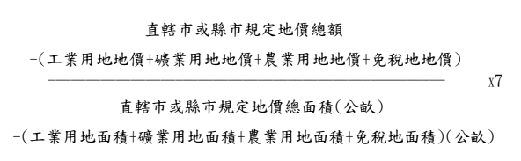
稅率¶
稅率:一般稅率 - 地價稅基本稅率為千分之十。土地所有權人之地價總額未超過土地所在地直轄市或縣 (市) 累進起點地價者,其地價稅按基本稅率徵收; 超過累進起點地價者,依左列規定累進課徵: 一、超過累進起點地價未達五倍者,就其超過部分課徵千分之十五。 二、超過累進起點地價五倍至十倍者,就其超過部分課徵千分之二十五。 三、超過累進起點地價十倍至十五倍者,就其超過部分課徵千分之三十五 。 四、超過累進起點地價十五倍至二十倍者,就其超過部分課徵千分之四十五。 五、超過累進起點地價二十倍以上者,就其超過部分課徵千分之五十五。 (土稅16)
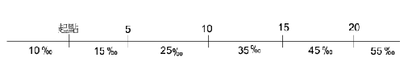
稅率¶
稅率:自住優惠稅率
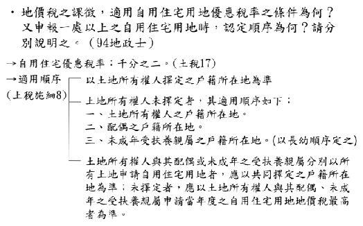
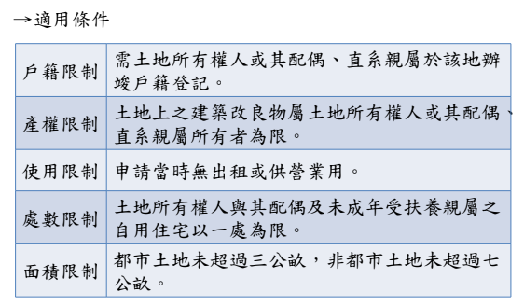
何謂自用住宅用地¶
何謂自用住宅用地?申請按自用住宅用地課徵地價稅之時機及應備文件為何?逾期申請者,應如何適用?適用特別稅率之原因及事實消滅時,土地所有權人負有何種義務? 違者,處罰規定如何?(103地政士) - 本法所稱自用住宅用地,指土地所有權人或其配偶、直系親屬於該地辦竣戶籍登記,且無出租或供營業用之住宅用地。(土稅9) - 應提出之文件:申請書、戶口名簿影本及建築改良物證明文件。 - 申請期限:土地所有權人應於每年(期)地價稅開徵40日前提出申請。逾期申請者,自申請之次年開始適用。(11/1開徵,9/22前申請) - 適用稅率優惠之原因、事實消滅時,應即向主管機關申報。(土稅施細15)。 - 未向主管稽徵機關申報者,除追補應納部分外,處短匿稅額或賦額三倍以下之罰鍰。應追補之稅額或賦額、隨賦徵購實物及罰鍰,納稅義務人應於通知繳納之日起一個月內繳納之;屆期不繳納者,移送強制執行。(土稅54)
{#n8}¶
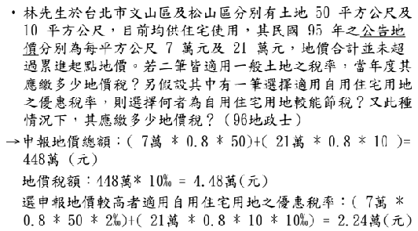
{#n9}¶
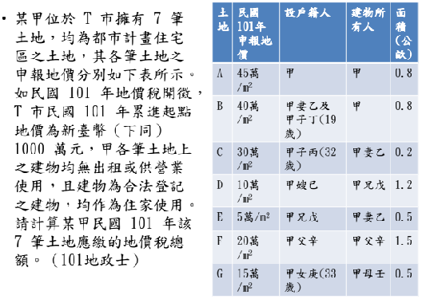
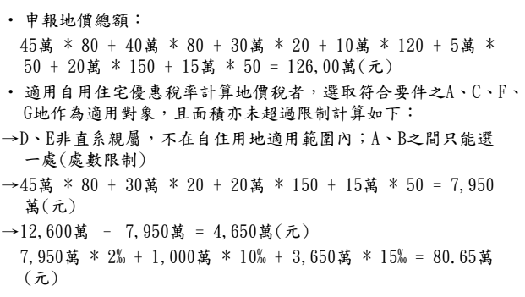
稅率¶
稅率:特別稅率 - 請回答下列關於地價稅之問題: (二)在累進起點地價計算公式中,有所謂「工業用地」、「礦業用地」、「農業用地」等名詞,請分別依土地稅法第10條規定說明其意義。 (三)對工業用地、礦業用地與農業用地是如何課徵地價稅?(90經紀人第一次) - 依土地稅法規定以特別稅率計徵地價稅之各事業直接使用土地,其適用之要件與範圍如何認定?(92地政士) 本法所稱工業用地,指依法核定之工業區土地及政府核准工業或工廠使用之土地;所稱礦業用地,指供礦業實際使用地面之土地。(土稅10) - 供左列事業直接使用之土地,按千分之十計徵地價稅。但未按目的事業主管機關核定規劃使用者,不適用之: 一、工業用地、礦業用地。 二、私立公園、動物園、體育場所用地。 三、寺廟、教堂用地、政府指定之名勝古蹟用地。 四、經主管機關核准設置之加油站及依都市計畫法規定設置之 供公眾使用之停車場用地。 五、其他經行政院核定之土地。(土稅18) - 依本法第十八條第一項特別稅率計徵地價稅之土地,指左列各款土地經按目的事業主管機關核定規劃使用者。 一、工業用地:為依區域計畫法或都市計畫法劃定之工業區或依其他法律規定之工業用地,及工業主管機關核准工業或工廠使用範圍內之土地。 二、礦業用地:為經目的事業主管機關核准開採礦業實際使用地面之土地 三、私立公園、動物園、體育場所用地:為經目的事業主管機關核准設立之私立公園、動物園及體育場所使用範圍內之土地。 四、寺廟、教堂用地、政府指定之名勝古蹟用地:為已辦妥財團法人或寺廟登記之寺廟、專供公開傳教佈道之教堂及政府指定之名勝古蹟使用之土地。 五、經主管機關核准設置之加油站及依都市計畫法規定設置之供公眾使用之停車場用地:為經目的事業主管機關核准設立之加油站用地,及依都市計畫法劃設並經目的事業主管機關核准供公眾停車使用之停車場用地。 六、其他經行政院核定之土地:為經專案報行政院核准之土地。 (土稅施細13)
對於公共設施保留地之使用限制及其地價稅與土地增值稅之減免,都市計畫法及土地稅法各…¶
- 對於公共設施保留地之使用限制及其地價稅與土地增值稅之減免,都市計畫法及土地稅法各有何規定?試說明之。(96經紀人第二次)
- 試依區域計畫法之規定,說明非都市土地使用管制之結構為何?又,依土地稅法之規定,都市計畫公共設施保留地之地價稅如何課徵?依都市計畫法之規定,私有公共設施保留地之取得方式為何?以上三問,請依序分別說明之。 (106經紀人)
- 依土地稅法及土地稅減免規則之規定,請說明公共設施保留地、無償供公眾通行之道路用地與供公眾通行之騎樓走廊用地,三者土地之地價稅依法如何課徵?試說明之。 (107地政士)
- 對於公共設施保留地之使用限制:依本法指定之公共設施保留地,不得為 妨礙其指定目的之使用。但得繼續為原來之使用或改為妨礙目的較輕之使用。(都計51)
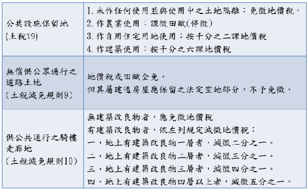
非都市土地使用管制之結構:非都市土地得劃定為特定農業、一般農業、工業、鄉村、森林、山坡地保育、風景、國家公園、河川、海域、特定專用等使用分區。非都市土地依其使用分區之性質,編定為甲種建築、乙種建築、丙種建築、丁種建築、農牧、林業、養殖、鹽業、礦業、窯業、交通、水利、遊憩、古蹟保存、生態保護、國土保安、殯葬、海域、特定目的事業等使用地。(非都2、3)
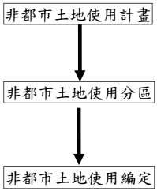
私有公共設施保留地之取得方式¶
私有公共設施保留地之取得方式
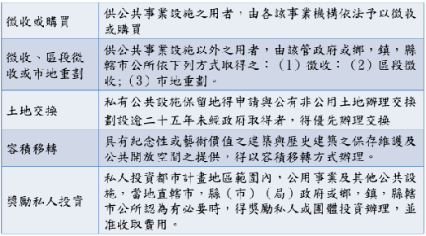
甲所有位於A市都市計畫範圍內土地一筆(下稱系爭土地),被都市計畫主管機關依法指定…¶
- 甲所有位於A市都市計畫範圍內土地一筆(下稱系爭土地),被都市計畫主管機關依法指定為「市場」公共設施保留地,惟迄未被徵收,都市計畫主管機關告以得為臨時建築使用,甲乃規劃興建為攤販集中場並出租他人供作擺 攤之用。不久,A市稅捐稽徵機關稽查人員發現系爭土地之使用內涵與毗鄰商業(場)用地相同,乃基於租稅法上「實質課稅原則」而以該商業用地之地價向甲發單課徵地價稅,甲不服並主張應以系爭土地之地價為稅基計徵地價 稅,問:(一)甲之主張有無理由?倘若日後系爭土地被徵收時,其地價補償標準為何?(99經紀人) →甲之主張有理:依據土地稅法第十九條規定,都市計畫公共設施保留地,在保留時間仍為使用者,除了自用住宅用地按千分之二外,統按千分之六計徵地價稅,非與毗鄰商業用地同。(土稅§19) →日後系爭土地被徵收,在都市計畫區內之公共設施保留地,應按毗鄰非公共設施保留地之平均市價補償其地價。(土徵30)
我國地價稅係採倍數累進方式課徵,但也針對土地使用或權屬規定不須累進之特別稅率或減…¶
我國地價稅係採倍數累進方式課徵,但也針對土地使用或權屬規定不須累進之特別稅率或減免。試依土地稅法規定說明地價稅之特別稅率內容。(109地政士)
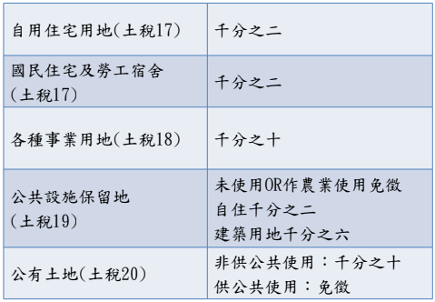
地價稅之累進起點地價¶
地價稅之累進起點地價: 地價稅採累進稅率，以各該直轄市或縣(市)土地7公畝之平均地價，為累進起點地價，但不包括工業用地、礦業用地、農業用地及免稅土地在內。累進起點地價之計算公式如下: 累進起點地價=
地價稅課徵之一般稅率結構¶
地價稅課徵之一般稅率結構:地價稅一般稅率結構共分六個級距: 16(極度重要) 地價稅基本稅率為千分之十。土地所有權人之地價總額未超過土地所在地直轄市或縣（市）累進起點地價者，其地價稅按基本稅率徵收；超過累進起點地價者，依左列規定累進課徵： 一、超過累進起點地價未達五倍者，就其超過部分課徵千分之十五。 二、超過累進起點地價五倍至十倍者，就其超過部分課徵千分之二十五。 三、超過累進起點地價十倍至十五倍者，就其超過部分課徵千分之三十五。 四、超過累進起點地價十五倍至二十倍者，就其超過部分課徵千分之四十五。 五、超過累進起點地價二十倍以上者，就其超過部分課徵千分之五十五。 前項所稱累進起點地價，以各該直轄市或縣（市）土地七公畝之平均地價為準。但不包括工業用地、礦業用地、農業用地及免稅土地在內。
地價稅¶
| 地價稅 | |
|---|---|
| 納稅義務人 | 原則: 所有權人 典權人 承領人 耕作權人 信託關係受託人 例外: 公有:管理機關 公同共有:管理人 分別共有:個共有人 田賦:推一人為代表人，不推按應有部分 代繳:稽徵機關指定使用人 代繳: 所有人行蹤不明 權屬不明 無人管理 所有權人申請由占有人代繳 |
| 時機 | 每年11/1~11/30 納稅義務基準日8/31土地登記簿上的登記名義人要繳這一年的地價稅 |
| 稅基 | 每一個人在每一直轄市、縣(市)申報地價總額 |
| 稅率 | 優惠:2/1000 基本:10/1000 累進:依累進起點地價 5倍:15/1000 10倍:25/1000 15倍:35/1000 20倍:45/1000 25倍以上:55/1000 優惠: 自用住宅:2/1000 <要件> 戶籍、用途、面積、產權、處數 國宅、勞宅:2/1000 自動工興建或取得 五款事業用地: 10/1000 公保地 自用:2/1000 未用且隔離免繳 使用:6/1000 農用:田賦 公有土地: 原則以基本稅率課徵，公用時免徵 |
| 免徵或不課徵 | 公有公用土地 私有公保地供公用 農業用地作農業使用 公保地未使用 |
| 稽徵程序 | 1.8/31納稅義務基準日 2.開徵日前40天優惠申報 3.開徵日前60天政府公告 4.收到稅單30日內繳納 |
| 罰則 | 逾期未繳每逾2日加徵1%，逾30日強制執行 逃稅或輕稅除追捕應納稅額，處短匿稅額3倍以下罰緩。 |
| 不動產評議委員會 | 房屋標準價格之訂立及公告: 房屋標準價格由不動產評價委員會按下列事項分別評定，並由地方政府公告: 按各種建材所建房屋，區分種類及等級 各種房屋耐用年數及折舊標準 按房屋所處街道村里商業交通情形及房屋供求狀況，比較各該地區房屋買賣價格剪除地價部分，訂定標準。 房屋標準價格每三年評定一次，依耐用年數予以折舊，按年遞減其價格 不動產評議委員會: 由有關主管人員及建築技術專門人員組成，民意機關及人民團體不得少於2/5。組織規程財政部訂之。 |
土地增值稅¶
土地增值稅 政策目的 納稅義務人 審核標準 稅率(一般、自住優惠稅率) 免徵、不課徵、減徵 重購退稅 罰鍰 計算題 應用題
政策目的¶
政策目的 - 課徵土地增值稅之目的為何?又在那些情況下得予以減徵?試申述之。(103經紀人) →土地價值非因施以勞力資本而增加者,應由國家徵收土地 增值稅,歸人民共享之。(憲143) →為了達到漲價歸公、地利共享,藉由徵稅讓人民共享自然增值,達成平均地權之目標。
政策效果與課徵時機¶
政策效果與課徵時機 - 試問政府輕課土地增值稅,可能產生何種政策效果?請分別從土地利用、地方財政及社會公平面分析之。(96經紀人第一次) →土地利用方面:鼓勵土地壟斷投機、造成地主只望坐享其成。 →地方財政方面:地方財源短缺。 →社會公平方面:自然增值歸地主享有,造成社會不公平。
請分別依土地法、平均地權條例及土地稅法之規定,說明課徵土地增值稅之時機¶
**請分別依土地法、平均地權條例及土地稅法之規定,說明課徵土地增值稅之時機?(96經紀人第一次)
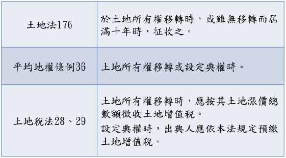
**
土增稅納稅義務人¶
土增稅納稅義務人: - 土地增值稅、遺產稅及贈與稅之納稅義務人各為何?試分別說明之。(105地政士) - 土地稅法對信託土地在地價稅及土地增值稅課徵時,其有關納稅義務人規定為何?(109地政士) - 土地為信託財產者,在哪些情況下其移轉不課徵土地增值稅?信託土地課徵土地增值稅時,其納稅義務人為何?(90地政士) **
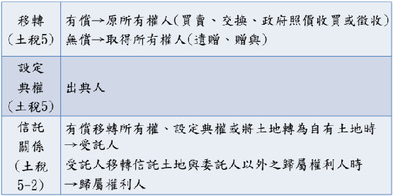
**
試依土地稅法規定,說明信託土地課徵土地增值稅之納稅義務人為何¶
** - 試依土地稅法規定,說明信託土地課徵土地增值稅之納稅義務人為何?又此納稅義務可否由當事人依契約予以變更?其理由為何?(92經紀人)** →私契約不能排除公法上須依法納稅之義務,亦即不能以契約變更納稅義務人。惟私契約約定雖違反公法上規定,其約定仍然有效,拘束雙方當事人。 →土地增值稅之納稅義務人仍為出賣人,此時買受人可以持載明納稅義務人為出賣人之稅單向稅捐稽徵單位繳納。若買受人不繳納,則出賣人先自行繳納,再依私契規定向買受人請求給付。
土地增值稅之納稅義務人為何¶
**土地增值稅之納稅義務人為何?又土地分割與土地合併後課徵土地增值稅之規定為何?請分 別說明之。(94地政士)
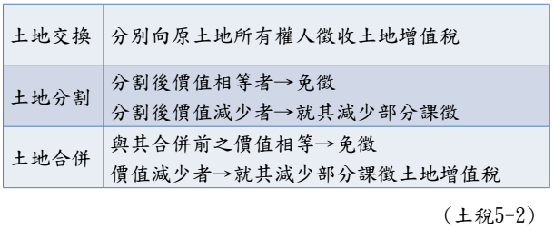
**
審核標準¶
**審核標準: - 土地所有權移轉或設定典權時,請問審核土地漲價總數額申報移轉現值之標準為何?(96地政士) - 稅捐稽徵機關對於土地申報移轉現值之審核標準為何?又,土地增值稅得重購退稅之情形為何?請依土地稅法之規定,分別說明之。(106經紀人) - 依土地稅法之規定,土地所有權移轉或設定典權,其申報移轉現值之審核標準,有那些規定?(107地政士)
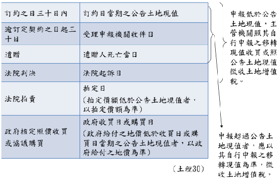
**
{#n26}¶
**
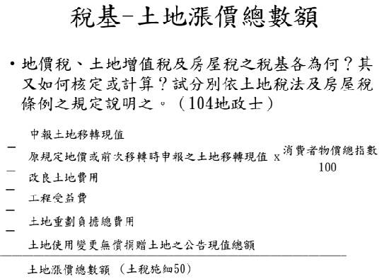
**
{#n27}¶
**
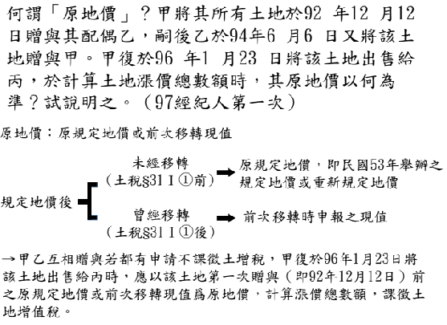
**
稅率¶
稅率: - 土地增值稅之稅率,依下列規定: 一、土地漲價總數額超過原規定地價或前次移轉時核計土地增值稅之現值數額未達百分之一百者,就其漲價總數額徵收增值稅百分之二十。 二、土地漲價總數額超過原規定地價或前次移轉時核計土地增值稅之現值數額在百分之一百以上未達百分之二百者,除按前款規定辦理外,其超過部分徵收增值稅百分之三十。 三、土地漲價總數額超過原規定地價或前次移轉時核計土地增值稅之現值數額在百分之二百以上者,除按前二款規定分別辦理外,其超過部分徵收增值稅百分之四十。 (土稅33)
自住優惠稅率¶
自住優惠稅率 - 何謂自用住宅用地?自用住宅用地適用土地增值稅優惠稅率之要件為何?試說明之。(98經紀人) - 土地所有權人出售土地,申請按自用住宅用地課徵土地增值稅,應備要件如何?次數限制及例外規定又如何?請分述之。(99地政士) - 試說明自用住宅的地價稅與土地增值稅在戶籍登記、面積、出租及營業、次數及處數限制、稅基上的規定有何異同?(108地政士) - 土地所有權人出售其自用住宅用地者,土地增值稅享有特別稅率,但適用該特別稅率時,有面積及次數限制。試問,土地所有權人申報之自用住宅用地面積超過面積限制時,依何順序計算至規定之面積限制為止?又,在那些情形之下,土地所有權人再出售其自用住宅用地時,適用增值稅特別稅率不受一次之限制?(105地政士) 自用住宅意義:指土地所有權人或其配偶、直系親屬於該地辦竣戶籍登記,且無出租或供營業用之住宅用地。(土稅9) - 自用住宅優惠稅率:百分之十計徵。 **
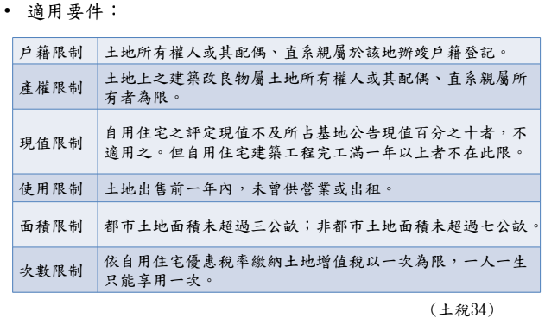
**
{#n30}¶
**
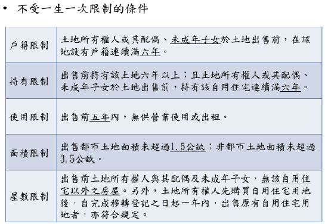
**
{#n31}¶
**
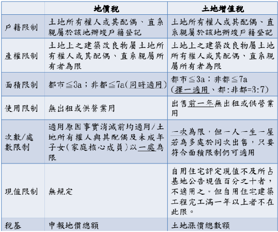
**
土地所有權人申報之自用住宅用地面積超過面積限制時,依何順序計算至規定之面積限制為…¶
土地所有權人申報之自用住宅用地面積超過面積限制時,依何順序計算至規定之面積限制為止?(105地政士) - 土地所有權人申報出售在本法施行區域內之自用住宅用地,面積超過本法第三十四條第一項規定時,應依土地所有權人擇定之適用順序計算至該規定之面積限制為止;土地所有權人未擇定者,應以各筆土地依本法第三十三條規定計算之土地增值稅,由高至低之適用順序計算之。 (土稅施細44)
請問自用住宅用地之土地增值稅優惠稅率為何¶
請問自用住宅用地之土地增值稅優惠稅率為何?甲擁有住宅一棟,一向都是自住未曾出租或供營業使用,該住宅坐落的土地面積為 50 坪,惟其地價稅未曾申請按自用住宅用地課徵而是依一般稅率課稅;今甲欲將該土地出售,請分析說明甲能否申報依土地增值稅自用住宅優惠稅率課徵。(95地政士) - 自用住宅優惠稅率:百分之十計徵。 - 列出適用要件 - 甲可以申報依土地增值稅自用住宅優惠稅率課徵。其理由如下: 1.土地稅法第三十四條第一項所定「自用住宅用地」依同法第九條規定,係指「土地所有權人或其配偶,直系親屬於該地辦竣戶籍登記,且無出租或供營業用之住宅用地」,並未以須經稽 徵機關核准按自用住宅用地稅率課徵地價稅爲認定之標準。 2.以「須經稽徵機關准按自用住宅用地稅率課徵地價稅」住宅優惠稅率課徵之要件,係增加土地稅法第三十四條第一項所無之限制,有達憲法第十九條租稅法律主義。
{#n34}¶
**
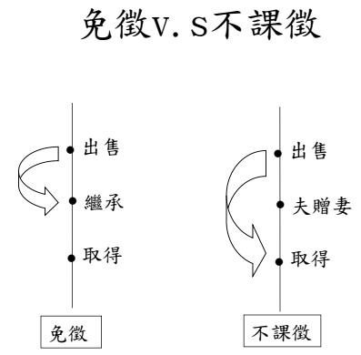
**
免徵¶
**免徵 - 試依土地稅法之規定,說明免徵土地增值稅之情形為何?(90經紀人第二次) - 試依土地稅法之規定,舉出八種免徵土地增值稅之情形?(97地政士) - 對於公共設施保留地之使用限制及其地價稅與土地增值稅之減免,都市計畫法及土地稅法各有何規定?試說明之。(96經紀人第二次)
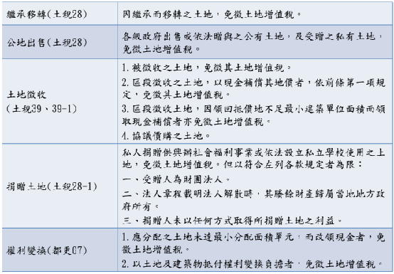
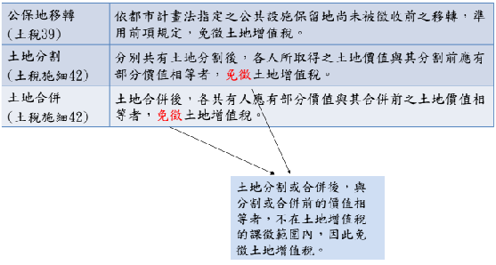
**
不課徵¶
**不課徵 - 在哪些情況下土地之移轉不課徵土地增值稅?試依土地稅法規定說明之。(91地政士) - 試依土地稅法及平均地權條例之規定,土地為信託財產者在何種情形得不課徵土地增值稅?(93經紀人) - 作農業使用之農業用地,及一部分農業用地依法律變更為非農業用地,移轉與自然人時,得申請不課徵土地增值稅。試分別說明「農業用地」的法律依據及範圍,以及哪些情形下農業用地依法變更為非農業用地,亦得申請不課徵土地增值稅。(102地政士) - 試依土地稅法相關規定,詳述土地移轉時,關於免徵土地增值稅的情形為何?又以土地為信託財產時,在何種情形下,不課徵土地增值稅?(106地政士)
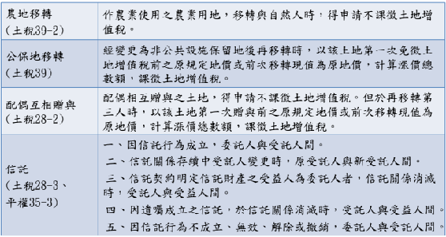
**
作農業使用之農業用地,及一部分農業用地依法律變更為非農業用地,移轉與自然人時,得…¶
作農業使用之農業用地,及一部分農業用地依法律變更為非農業用地,移轉與自然人時,得申請不課徵土地增值稅。試分別說明「農業用地」的法律依據及範圍,以及哪些情形下農業用地依法變更為非農業用地,亦得申請不課徵土地增值稅。(102地政士) 一、農業發展條例第三條第十一款所稱之耕地。 二、依區域計畫法劃定為各種使用分區內所編定之林業用地、養殖用地、 水利用地、生態保護用地、國土保安用地及供農路使用之土地,或上開分區內暫未依法編定用地別之土地。 三、依區域計畫法劃定為特定農業區、一般農業區、山坡地保育區、森林區以外之分區內所編定之農牧用地。 四、依都市計畫法劃定為農業區、保護區內之土地。 五、依國家公園法劃定為國家公園區內按各分區別及使用性質,經國家公園管理機關會同有關機關認定合於前三款規定之土地。 (土稅施細57) 都市計畫主管機關認定符合下列各款情形之一,並取得農業主管機關核發農用證明,得向稽徵機關申請不課徵土地增值稅或免徵遺產稅、贈與稅或田賦: 1.細部計畫未完成,未能准許依變更後計畫用途使用者 2.已發布細部計畫地區,應實施市地重劃或區徵,於公告實施前未依變更後之計畫用途申請建築使用(農發38-1)
減徵¶
減徵 - 課徵土地增值稅之目的為何?又在那些情況下得予以減徵?試申述之。(103經紀人) - 下列二種土地移轉,其土地增值稅之優惠規定各如何? (一)配偶間相互贈與土地之移轉。 (二)重劃之土地,於重劃後第一次移轉。 **
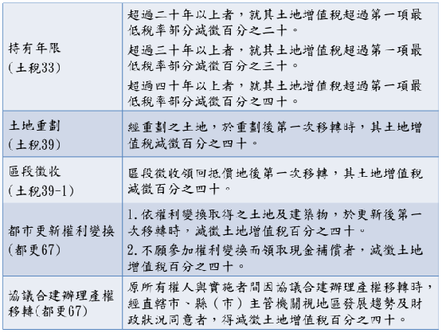
**
甲所有之¶
** - 甲所有之 A 地號土地,於民國 87 年 6 月因參加市地重劃確定,經分配改為 B 地號土地;嗣於民國 90 年 10月間,甲將該 B 地號土地贈與移轉登記予其妻乙。94 年 9月,乙將該 B 地號土地出售予丙。試問:乙將土地移轉予丙時,得否適用土地稅法第 39 條第 4 項規定減徵百分之 四十之土地增值稅?請附具理由申述之。(94地政士) - 夫之土地,重劃後贈與其妻,妻再出售與第三人時,妻得否享重劃後第一次移轉土地增值稅之優惠?法律依據各如何?請分述之。(100地政士)** - 贈與妻時如申請不課徵,則妻出售時可適用此優惠 →贈妻時,不屬重劃後第一次移轉,妻出售時為第一次移轉。 - 贈與妻時如未申請不課徵,則妻出售時不可適用此優惠 →贈妻時,屬重劃後第一次移轉,該次減徵40%,妻出售時 即不為第一次移轉,不得再適用減徵優惠。
重購退稅¶
**重購退稅 - 因重購土地申請退還土地增值稅,其申請應備條件、出售與重購地價之認定、退稅額度、重購土地移轉或使用之限制各為何?請依土地稅法規定析述之。(103地政士) - 稅捐稽徵機關對於土地申報移轉現值之審核標準為何?又,土地增值稅得重購退稅之情形為何? 請依土地稅法之規定,分別說明之。(106經紀人)
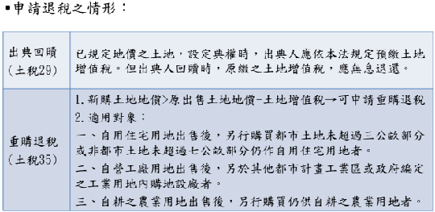
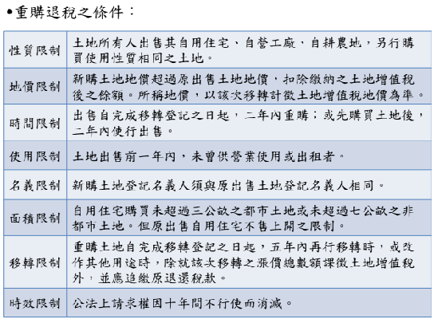
**
罰鍰¶
罰鍰: - 受贈土地之社會福利事業或私立學校財團法人在何種情形下,除追補應納之土地增值稅外,並處應納土地增值稅額二倍之罰鍰?(90經紀人第一次) →依第二十八條之一受贈土地之財團法人,有左列情形之一者,除追補應納之土地增值稅外,並處應納土地增值稅額二倍之罰鍰: 一、未按捐贈目的使用土地者。 二、違反各該事業設立宗旨者。 三、土地收益未全部用於各該事業者。 四、經稽徵機關查獲或經人舉發查明捐贈人有以任何方式取得 所捐贈土地之利益者。(土稅55-1)
計算題¶
計算題 - 假設甲於 94 年10 月21 日第一次出售都市自用住宅土地,面積30 平方公尺,公告現值為每平方公尺100,000 元,前次移轉(六年前)公告現值為每平方公尺40,000元,當前次甲購買時為基期,至94 年10 月甲申報土地增值稅時公告之消費者物價指數為150%,試問: 1.該土地若採用一般住宅用地稅率時,該繳之土地增值稅。 2.該土地若適用自用住宅用地優惠稅率時,所應繳土地增值稅。 3.若甲已於94 年6 月,購買另一自用住宅用地,面積40平方公尺,公告現值為每平方公尺200,000 元,當您幫甲作最好稅務規劃時,您會建議甲採取一般住宅稅率或自用住宅優惠稅率計課土地增值稅,請說明其理由。(94經紀人) (一)一般住宅用地應繳土地增值稅 1.前次移轉現值:40,000 x 150% x 30=1,800,000元 2.本次移轉現值:100,000 x 30= 3,000,000元 3.土地漲價總數額:3,000,000-1,800,000%= 1,200,000元 4土地增值稅:1,200,000 x 20%= 240,000元 (二)自用住宅用地優惠稅率應繳土地增値稅: 1.200,000 x 10% \= 120,000元 (三)稅務規劃:建議甲探取一般住宅稅率計課土地增值稅。其理 由如下:1.本次可採用自用住宅重購退稅,退稅金額240,000元, 因此,重購退稅較採自用住宅用地優惠稅率更有利,2.自用住 宅用地優惠稅率一人一生只能適用一次,可留待下次再使用。
甲君於¶
** - 甲君於 98 年 5 月 19 日第一次出售都市住宅土地,土地面積 500 平方公尺,公告現值為每平方公尺 80,000元,前次移轉(23 年前)公告現值每平方公尺 2,000 元,假定 23 年前甲購買時為基期,至 98 年甲申報土地增值稅時公告之消費者物價指數為500%,請問甲應繳一般用地之土地增值稅是多少?接續該條件,甲君就該土地申請依自用住宅用地優惠稅率課徵,所應繳土地增值稅又是多少?比較一般土地負擔,請問甲君有無可能依一般稅率申報。(98地政士)** 一、 (一)前此移轉現值為:2,000元 × 500% \= 10,000元 (二)土地漲價總數額:80,000元-(2,000元 × 500%)= 70,000元 / 每平方公尺 (三)計算一般用地之增值稅額:持有 23 年得適用長期持有減徵之稅率, 持有土地年限超過 20 年以上者,就其土地增值稅超過第一項最低稅 率部分減徵 20%,計算如下: 1. 10,000元 × 20% \= 20,000元(第一稅率等級) 2. 10,000 × 30%-〔10,000 ×(30%-20%)×20%〕=3,000元- 200元=2,800元(第二稅率等級) 3. 50,000元 × 40% -〔50,000 × (40%-20%)×20%〕=20,000元- 2,000元=18,000元(第三稅率等級) 合計每平方公尺增值稅為2,000元+2,800元+18,000元=22,800元 甲應納一般用地之增值稅額 \= 22,800元 × 500m2 \=1,140萬元 二、 (一)300平方公尺爲自用住宅用地: 1.前次移轉現值:0.2萬x500%x300 \= 300萬元 2.本次移轉現值:8萬x300 \= 2400萬元 3.土地漲價總數額:2400萬-300萬 \= 2100萬元 4.土地增值稅:2100萬x10%= 210萬元 (二)200平方公尺爲一般土地: 1.前次移轉現值:0.2萬x500%x200 \= 200萬元 2.本次移轉現值:8萬x200 \= 1600萬元 3.土地漲價總數額:1600萬-200萬= 1400萬元 4.土地增值稅:200萬x20%+ 200萬x28%+ 1000萬x36%= 456萬元 (三)兩者合計:210萬 + 456萬 \= 666萬元,甲申請依自用住宅用地優 惠稅率課徵,應繳土地增値稅是666萬元 (四)比較:一般用地負擔是1140萬元,自用住宅用地負擔是666萬元, 其間差額爲474萬元。然甲君仍有可能依一般稅率申報,其理由如下: 1.採取自用住宅重購退稅方法,則不論依一般土地稅率計課或自用住 宅用地優惠稅率計課,其所繳之土地增値稅皆有可能全數退還。故甲 君可不申請依自用地優惠稅率課徵。 2.自用住宅用地優惠稅率一人一生只能一次。因此本次不用,留待下 次再使用。
某甲將下列土地及房屋(資料如下)於民國¶
** - 某甲將下列土地及房屋(資料如下)於民國 106 年10 月 15日贈與朋友乙,請問其應繳納之土地增值稅、契稅及贈與稅各為若干? 贈與之土地及房屋資料如下: (一)土地 土地取得日期:民國 80 年 3 月 8 日 面積:200 平方公尺; 前次移轉現值:10,000 元/平方公尺 贈與時公告土地現值:30,000 元/平方公尺 物價指數:150 改良土地費用:300,000 元 (二)房屋 建物面積:100 平方公尺 評定現值:800,000 元** →土地增值稅: 3萬 * 200 - 1萬 * 150% * 200 - 300 \= 270萬(元) 270萬 * 20% \= 54萬(元)
張三以往並無任何不動產,一向亟思購地興建自用住宅,乃於84年二月以每平方公尺30…¶
張三以往並無任何不動產,一向亟思購地興建自用住宅,乃於84年二月以每平方公尺30,000元向三重市某地主購得某筆土地,登記面積為200平方公尺,土地使用分區為住宅,公告土地現值為20,000元。購地價款中有一半係向某銀行貸款,年息一分,為期一年,惟每年均自動延期。89年十月曾因附近道路拓寬,繳納工程受益費每平方公尺500元,95年二月間因基地低漥,請在附近興建工程之甲建設公司代為填土1,000立方公尺,每立方公尺代價為500元,有其收據為憑,當月完工後立即租予某商號做為儲存廠,月租5,000元。107年七月初,張三因需資金,將該筆土地以每平方公尺2,000,000元悉數賣給乙建設公司,公告土地現值為每平方公尺1,000,000元,並立即償還貸款。張三至少須繳納若干土地增值稅?(84年物價指數400/100,89年物價指數330/100,95年物價指數200/100) Ans: 100萬 * 200 - 2萬 * 400% *200 – 1,000 * 500 – 500 * 200 \= 18,340萬(元) 1,600萬 * 20% + 1,600萬 * 28% + 15,140萬 * 36% \= 6,218.4萬(元) 若甲出售時該筆土地為自用住宅之使用,並申請以優惠稅率課稅,則土 地增值稅計算如下: 18,340萬 * 10% \= 1,834萬(元)
應用題¶
應用題: - 甲所有位於市都市計畫範圍內土地一筆(下稱系爭土地),被都市計畫主管機關依法指定為「市場」公共設施保留地,惟迄未被徵收,都市計畫主管機關告以得為臨時建築使用,甲乃規劃興建為攤販集中場並出租他人供作擺攤之用。不久,A市稅捐稽徵機關稽查人員發現系爭土地之使用內涵與毗鄰商業(場)用地相同,乃基於租稅法上「實質課稅原則」而以該商業用地之地價向甲發單課徵地價稅,甲不服並主張應以系爭土地之地價為稅基計徵地價稅,問: (二)若甲於系爭土地被徵收前將之出售予乙,A市稅捐稽徵機關應如何徵收其土地增值稅?又,乙於取得期間系爭土地變更為非公共設施保留地,若乙打算將之出售予丙,則A市稅捐稽徵機關應如何徵收其土地增值稅?理由為何?(99經紀人) - 若甲於系争土地被徵收前出售予乙,依據土地稅法第39條第2項規定,免徵土地增值稅。 - 乙於取得期間系爭土地變更爲非公共設施保留地,若乙打算出售予丙,依據土地稅法第39條第2項但書規定,以該土地第一次免徵土地增値稅前之原規定地價或前次移轉現值爲原地價,計算漲價總數額課徵土地增値稅。 →理由:系争土地變更爲非公共設施保留地,日後土地徵收已不 存在,因此不必再給予免徵土地增值稅之優惠,故應恢復課徵 土地增値稅。
土地增值稅¶
| 土地增值稅 | |
|---|---|
| 納稅義務人 | 有償:原所有權人 無償:取得所有權人 設定點權:出典人 原則:誰享有利益，誰價值減少者來認定 有償: 買賣、交換、政府照價收買、徵收 交換: 雙方 分割合併: 價值減少一方 無償 贈與、遺贈 代繳: 取得所有權人 權利人 |
| 時機 | 所有權移轉或設典 交換、分割、合併視同所有權移轉 |
| 稅基 | 漲價總數額= 申報移轉現值-原地價*(台灣地區消費者物價指數/100) -土地改良支付費用 -工程受益費 -土地重劃負擔費用 -土地變更使用捐贈土地公告現值 |
| 稅率 | 優惠:10/100 累進: 1倍以內:20/100 1倍以上未達2倍:30/100 2倍以上:40/100 優惠: 一生一次: 戶籍、用途、產權、次數、現值、面積 一生一屋: 面積減半、一屋、持有6年、設籍6年、5年內不得移轉或變更用途 抵繳: 重新規定地價增繳地價稅可抵繳土增稅 按實際增繳 每年1%最多5% 記存:暫時不繳地價會動 事業合併 金融機構合併 都市更新權利變換 |
| 免徵或不課徵 | 免徵 繼承移轉 政府出售、贈與、受贈 私人捐贈:2單位3要件 2單位 興辦社會福利事業 設立私立學校 3要件 受贈人為財團法人 財團法人章程載明解散時，剩餘財產歸屬地方政府 捐贈人無以任何方式，取得捐贈土地之利益 徵收 被徵收土地 協議價購賣給政府 區段徵收領現金 區段徵收領抵價地 不課徵 夫妻贈與 農業用地作農業使用移轉與自然人 公保地變為非公保地 信託: 信託成立:委一受 受託人變更:原受-新受 自益信託關係消滅:受-受(益) 遺囑成立信託:受-受(益) 信託行為不成立、無效、解除或撤銷:委-受 減徵 土地重劃區段徵收後第一次移轉減徵40% 長期持有減徵 |
| 重購退稅 | 性質條件: 自用住宅 自營工廠 自用農地 時間條件: 二年內先賣再買或先買再賣都可 使用條件: 出售前一年無出租或供營業用 地價限制: 新購地價超過(原出售地價扣除土增稅)之餘額，超過部分在前次繳交土增稅費為內可退稅 面積條件 都土3公畝或非都土7公畝 移轉條件 五年內再次移轉或改變用途，追繳原退稅款 7.無次數限制 |
| 稽徵程序 | 申報移轉現值之審核標準 訂約30日以內以訂約日 訂約30日以後以申報日 遺贈以遺贈人死亡日 法院判決以起訴日 法院拍賣以拍定日公告現值但拍定價額低者以拍定價額 照價收買或協議價購以收買日或收購日公告土地現值，但收買價低者以收買價。 低報或高報: 低報照價收買或照公告現值課徵 高報照申報課徵 核定期限: 一般7日 自用20日 收到通知書30日內繳清，逾30日未繳限期繳清或撤回原申報案 |
| 信託移轉 | 應課徵 信託關係存續中，有償移轉所有權、設定典權或依信託法第35條一項規定轉為其自有土地時。 受託人依信託本旨移轉信託土地與委託人以外之歸屬權利人時 不課徵 信託成立:委一受 受託人變更:原受-新受 自益信託關係消滅:受-受(益) 遺囑成立信託:受-受(益) 信託行為不成立、無效、解除或撤銷:委-受 |
| 罰則 | 逾期未繳每逾2日加徵1%，逾30日強制執行 逃稅或輕稅除追捕應納稅額，處短匿稅額3倍以下罰緩。 買賣未辦竣移轉登記再行出售，處出售時移轉現值2% 私人捐贈免徵土增稅，有下列事實，除追繳應納稅額處2倍罰鍰 未按捐贈目的使用該土地 違反各該事業設立宗旨 土地收益未全部使用於該事業 捐贈人經稽徵機關查獲或經人檢舉，有以任何方式收受土地之利益 |
| 不動產評議委員會 | 1. 房屋標準價格之訂立及公告: 房屋標準價格由不動產評價委員會按下列事項分別評定，並由地方政府公告: (1) 按各種建材所建房屋，區分種類及等級 (2) 各種房屋耐用年數及折舊標準 (3) 按房屋所處街道村里商業交通情形及房屋供求狀況，比較各該地區房屋買賣價格剪除地價部分，訂定標準。 房屋標準價格每三年評定一次，依耐用年數予以折舊，按年遞減其價格 2. 不動產評議委員會: 由有關主管人員及建築技術專門人員組成，民意機關及人民團體不得少於2/5。組織規程財政部訂之。 |
信託土地於地價稅之納稅義務人如下¶
信託土地於地價稅之納稅義務人如下: 信託土地於土地增值稅之納稅義務人如下: